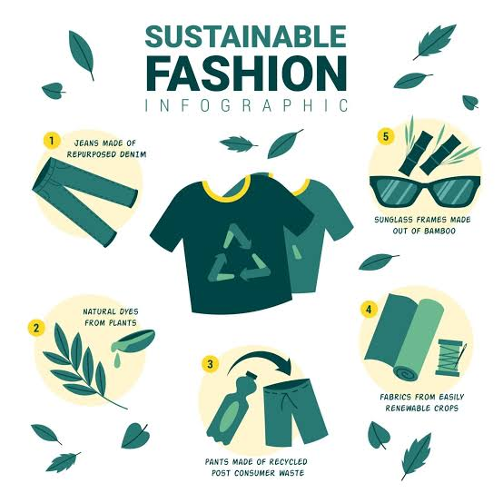

Sustainable fashion is about making clothing choices that are better for the environment. Fast fashion creates large amounts of waste and uses natural resources. By changing the way we buy, wear and look after our clothes, we can help reduce these problems.

Credit to AZ Big MediaShopping at thrift stores is a good way to make clothing choices more sustainable. It gives existing clothes another life instead of buying new items. This can help reduce clothing waste and the demand for newly manufactured clothes.
Instead of buying clothes just because they are trending, look for items that are well made and can be worn for a long time. Buying fewer clothes that last longer can reduce waste and help people avoid constantly replacing their clothing.
Making sustainable choices can help reduce pollution, save natural resources and lower the amount of clothing sent to landfills. This connects to kaitiakitanga, which is about caring for the environment and protecting natural resources for future generations. Even small changes can make a positive difference.